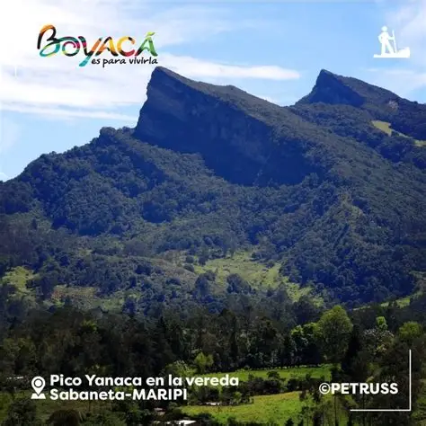
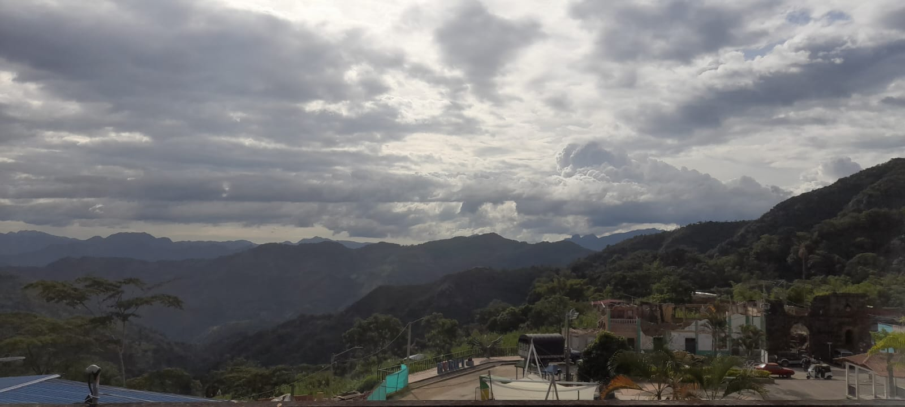

Turismo de Maripí
El turismo de maripi boyaca es parte importante para todos los maripenses , salir de paseo con toda la familia y distraerse un poco.

peña de yanacá
es un sitio turistico el cual se encuentra en la ladera oeste de la cordillera oriental, en su declinación por la cuenca del rio minero hacia el valle del rio magdalena, desde allí se puede divisar un paisaje espectacular.
📍 santa helena

Casa del aire
tambien conocida como la casa del zar de las esmeraldas, esta se ubica en la punta de una colina con grandes vistas, además que tiene una historia detras.

la vega del tigre
en este espacio se puede pasar tiempo con la familia. Además, de que se puede implementar actividades acuaticas.

Rio Minero
El río Minero en Maripí, Boyacá, no solo es un elemento geográfico importante, sino también un símbolo de la historia, la cultura y el potencial turístico de la región.
El tobogán

Finca casa blanca
Es un sitio turistico familiar, para disfrutar y convivir en familia.
📍
turismo patrimonial
Corte de Caña
La caña se corta en el punto óptimo de maduración, generalmente entre 12-18 meses.
Molienda
En el trapiche tradicional se extrae el jugo de caña mediante presión mecánica.
Clarificación
Se limpia el jugo eliminando impurezas y espumas mediante procesos naturales.
Concentración
El jugo se concentra en pailas de cobre hasta alcanzar el punto de panela.
Moldeo
La panela líquida se vierte en moldes donde se solidifica y toma su forma final.
Tours Paneleros Disponibles
🎓 Tour Educativo Completo
Conoce todo el proceso desde el cultivo hasta el producto final. Incluye degustación.
👨🌾 Experiencia de Cosecha
Participa en el corte de caña y todo el proceso de elaboración. Llévate tu propia panela.
🍬 Taller de Dulces
Aprende a hacer melcochas, alfandoques y otros dulces tradicionales con panela.